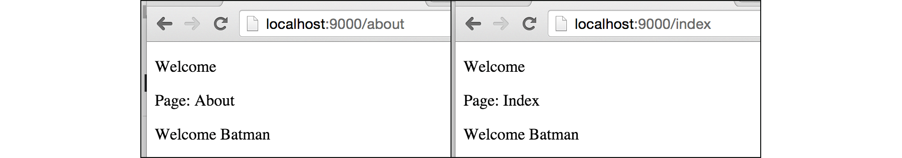

B.5. Template: Render Partial HTML Template
Satu buah halaman yang berisikan html, bisa terbentuk dari banyak template html (parsial). Pada bab ini kita akan belajar bagaimana membuat, mem-parsing, dan me-render semua file tersebut.
Ada beberapa metode yang bisa digunakan, dari kesemuanya akan kita bahas 2 diantaranya, yaitu:
- Menggunakan fungsi
template.ParseGlob(). - Menggunakan fungsi
template.ParseFiles().
B.5.1. Struktur Aplikasi
Mari langsung kita praktekan. Buat project baru, siapkan file dan folder dengan susunan seperti dengan gambar berikut.
B.5.2. Back End
Buka main.go, isi dengan kode berikut.
package main
import (
"net/http"
"html/template"
"fmt"
)
type M map[string]interface{}
func main() {
var tmpl, err = template.ParseGlob("views/*")
if err != nil {
panic(err.Error())
return
}
}
Tipe M merupakan alias dari map[string]interface{}, disiapkan untuk mempersingkan penulisan tipe map tersebut. Di bab-bab selanjutnya kita akan banyak menggunakan tipe ini.
Pada kode di atas, di dalam fungsi main(), fungsi template.ParseGlob() dipanggil, dengan parameter adalah pattern path "views/*". Fungsi ini digunakan untuk memparsing semua file yang match dengan pattern yang ditentukan, dan fungsi ini mengembalikan 2 objek: *template.Template & error.
Pattern path pada fungsi
template.ParseGlob()nantinya akan diproses olehfilepath.Glob()
Proses parsing semua file html dalam folder views dilakukan di-awal, agar ketika mengakses rute-tertentu-yang-menampilkan-html, tidak terjadi proses parsing lagi.
Parsing semua file menggunakan
template.ParseGlob()yang dilakukan di luar handler, tidak direkomendasikan dalam fase development. Karena akan mempersulit testing html. Lebih detailnya akan dibahas di bagian bawah.
Selanjutnya, masih di dalam fungsi main(), siapkan 2 buah rute.
http.HandleFunc("/index", func(w http.ResponseWriter, r *http.Request) {
var data = M{"name": "Batman"}
err = tmpl.ExecuteTemplate(w, "index", data)
if err != nil {
http.Error(w, err.Error(), http.StatusInternalServerError)
}
})
http.HandleFunc("/about", func(w http.ResponseWriter, r *http.Request) {
var data = M{"name": "Batman"}
err = tmpl.ExecuteTemplate(w, "about", data)
if err != nil {
http.Error(w, err.Error(), http.StatusInternalServerError)
}
})
fmt.Println("server started at localhost:9000")
http.ListenAndServe(":9000", nil)
Kedua rute tersebut sama, pembedanya adalah template yang di-render. Rute /index me-render template bernama index, dan rute /about me-render template bernama about.
Karena semua file html sudah diparsing di awal, maka untuk render template tertentu cukup dengan memanggil method ExecuteTemplate(), dengan menyisipkan 3 parameter berikut:
- Parameter ke-1, objek
http.ResponseWriter - Parameter ke-2, nama template
- Parameter ke-3, data
Nama template bukanlah nama file. Setelah masuk ke bagian front-end, akan diketahui apa yang dimaksud dengan nama template.
B.5.3. Front End
B.5.3.1. Template index.html
OK, sekarang waktunya untuk mulai menyiapkan template view. Ada 4 buah template yang harus kita siapkan satu per satu.
Buka file index.html, lalu tulis kode berikut.
{{define "index"}}
<!DOCTYPE html>
<html>
<head>
{{template "_header"}}
</head>
<body>
{{template "_message"}}
<p>Page: Index</p>
<p>Welcome {{.name}}</p>
</body>
</html>
{{end}}
Pada kode di atas terlihat bahwa ada beberapa kode yang ditulis dengan notasinya {{ }}. Berikut adalah penjelasannya.
- Statement
{{define "index"}}, digunakan untuk mendefinisikan nama template. Semua blok kode setelah statement tersebut (batasnya adalah hingga statement{{end}}) adalah milik template dengan namaindex. keyworddefinedigunakan dalam penentuan nama template. - Statement
{{template "_header"}}artinya adalah template bernama_headerdi-include ke bagian itu. keywordtemplatedigunakan untuk include template lain. - Statement
{{template "_message"}}, sama seperti sebelumnya, template bernama_messageakan di-include. - Statement
{{.name}}akan memunculkan data,name, yang data ini sudah disisipkan oleh back end pada saat rendering. - Statement
{{end}}adalah penanda batas akhir pendefinisian template.
B.5.3.2. Template about.html
Template ke-2, about.html diisi dengan dengan kode yang sama seperti pada index.html, hanya berbeda di bagian nama template dan beberapa text.
{{define "about"}}
<!DOCTYPE html>
<html>
<head>
{{template "_header"}}
</head>
<body>
{{template "_message"}}
<p>Page: About</p>
<p>Welcome {{.name}}</p>
</body>
</html>
{{end}}
B.5.3.3. Template _header.html
Buka file _header.html, definisikan template bernama _header dengan isi adalah judul halaman.
{{define "_header"}}
<title>Learn Golang Template</title>
{{end}}
Nama file bisa ditulis dengan diawali karakter underscore atau
_. Pada bab ini, nama file yang diawali_kita asumsikan sebagai template parsial, template yang nantinya di-include-kan ke template utama.
B.5.3.4. Template _message.html
Definisikan juga template _message pada file _message.html dengan isi sebuah text.
{{define "_message"}}
<p>Welcome</p>
{{end}}
B.5.5. Run & Test
Jalankan aplikasi, test via browser.

Bisa dilihat pada gambar di atas, ketika rute /index dan /about di akses, konten yang keluar adalah berbeda, sesuai dengan template yang di-render di masing-masing rute.
B.5.6. Parsing Banyak File HTML Menggunakan template.ParseFiles()
Metode parsing menggunakan template.ParseGlob() memiliki kekurangan yaitu sangat tergantung terhadap pattern path yang digunakan. Jika dalam suatu proyek terdapat sangat banyak file html dan folder, sedangkan hanya beberapa yang digunakan, pemilihan pattern path yang kurang tepat akan menjadikan file lain ikut ter-parsing dengan sia-sia.
Dan juga, karena statement template.ParseGlob() dieksekusi diluar handler, maka ketika ada perubahan pada salah satu view, lalu halaman di refresh, output yang dihasilkan akan tetap sama. Solusi dari masalah ini adalah dengan memanggil template.ParseGlob() di tiap handler rute-rute yang diregistrasikan.
Best parctices yang bisa diterapkan, ketika environment adalah production, maka tempatkan
template.ParseGlob()di luar (sebelum) handler. Sedangkan pada environment development, taruhtemplate.ParseGlob()di dalam masing-masing handler. Gunakan seleksi kondisi untuk mengakomodir skenario ini.
Alternatif metode lain yang bisa digunakan, yang lebih efisien, adalah dengan memanfaatkan fungsi template.ParseFiles(). Fungsi ini selain bisa digunakan untuk parsing satu buah file saja (seperti yang sudah dicontohkan di bab sebelumnya), bisa digunakan untuk parsing banyak file.
Mari kita praktekan. Ubah handler rute /index dan /about. Gunakan template.ParseFiles() dengan isi parameter (variadic) adalah path dari file-file html yang akan dipergunakan di masing-masing rute. Lalu hapus statement template.ParseGlob()
Rute
/indexdan handlernya.http.HandleFunc("/index", func(w http.ResponseWriter, r *http.Request) { var data = M{"name": "Batman"} var tmpl = template.Must(template.ParseFiles( "views/index.html", "views/_header.html", "views/_message.html", )) var err = tmpl.ExecuteTemplate(w, "index", data) if err != nil { http.Error(w, err.Error(), http.StatusInternalServerError) } })Rute
/aboutdan handlernya.http.HandleFunc("/about", func(w http.ResponseWriter, r *http.Request) { var data = M{"name": "Batman"} var tmpl = template.Must(template.ParseFiles( "views/about.html", "views/_header.html", "views/_message.html", )) var err = tmpl.ExecuteTemplate(w, "about", data) if err != nil { http.Error(w, err.Error(), http.StatusInternalServerError) } })Hapus statement
template.ParseGlob().var tmpl, err = template.ParseGlob("views/*") if err != nil { panic(err.Error()) return }
Rute /index memakai view _header.html, _message.html, dan index.html; sedangkan rute /about tidak memakai index.html, melainkan menggunakan about.html.
Wrap fungsi template.ParseFiles() dalam template.Must(). Fungsi ini berguna untuk deteksi error pada saat membuat instance *template.Template baru atau ketika sedang mengolahnya. Ketika ada error, panic dimunculkan.
Jalankan aplikasi untuk test hasilnya.